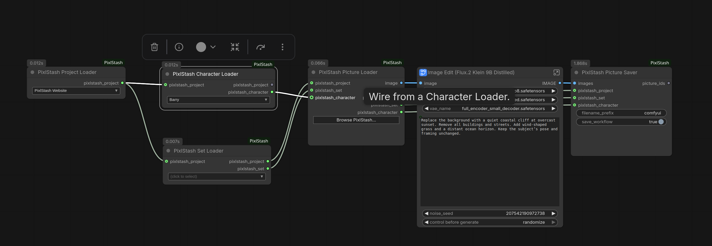
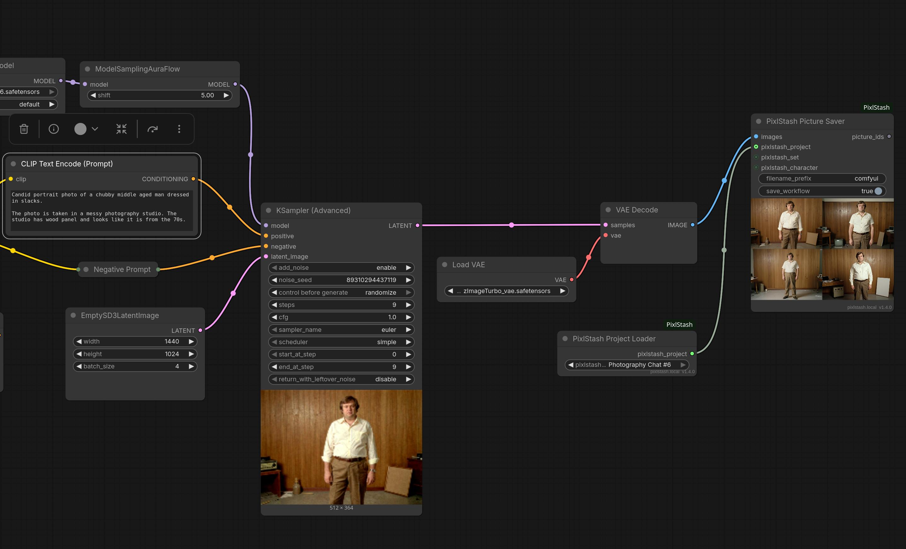

Integrate with scripts, pipelines and external tools. Fetch images, metadata, tags and more.
The API makes it easy to plug PixlStash into your own tooling. Two integrations we've built so far:
Our ai-toolkit fork pulls a curated dataset straight from a PixlStash vault and feeds it into a LoRA training run — no manual file juggling required.
Point an LM-Studio chat at your PixlStash server and the assistant can pull in matching pictures as it answers — reference shots, mood-board lookups and search-by-tag all happen without leaving the conversation.
The ComfyUI-PixlStash custom node package connects your vault directly to ComfyUI. Browse and load images by project, set, or character, run them through any pipeline, and save the results back with full metadata and optional workflow embedding.

Save results back to your vault from the same graph with the PhotographySaver node:

Jump straight into a section of the reference docs.
List, search, filter, import, export and edit your library's pictures and videos.
Group detected faces into characters and search by face likeness.
Curated, manually-orderable collections of pictures.
Read and edit the tags on pictures across your library.
Group bursts, edits and variants under a single leader with a manual order.
Top-level workspaces that scope sets and characters and hold attachments.